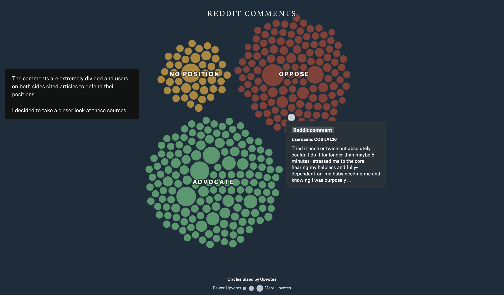

Capstone Project Comparative Analysis
Infant Sleep Training by The Pudding
I really liked the way this visualization from The Pudding incorporates social media commentary into their storyline. That's something I'm consdering implementing in my capstone project as well. I was interested by the way they visualized several people's posts in a data-driven approach which is something that I previously had thought about but didn't have any concrete ideas for how this might look in practice.
Visit →
Understanding Neurodiversity by Project Lima
The part that stood out the most to me on this site are we simple but detailed microanimations throughout the page that add to the experience of the website. What also stood out to me was how little data is used in the interactive experience section, most of it is explained in words and supplementary visuals whcih is probably a similar approach to what I want to do since I don't know if I'll be able to find relevant datasets for my project.
Visit →